Antes de começar
- Android (Chrome): abra o app, toque nos três pontinhos ⋮ no canto de cima e escolha Adicionar à tela inicial.
- iPhone (Safari): abra o app, toque no botão de compartilhar (o quadrado com uma seta para cima) e escolha Adicionar à Tela de Início.
Tudo o que você faz no app fica salvo sozinho neste celular. Não precisa apertar em "salvar".
Endereço do app: elisaschulz.github.io/escolinha/rodizio.html
O que tem neste guia
Montar o rodízio do mês
É isto que você faz todo mês, para cada igreja.
Escolha a igreja
Toque no nome da igreja. Ela fica pintada com a cor dela, e o resto do app passa a usar essa cor.
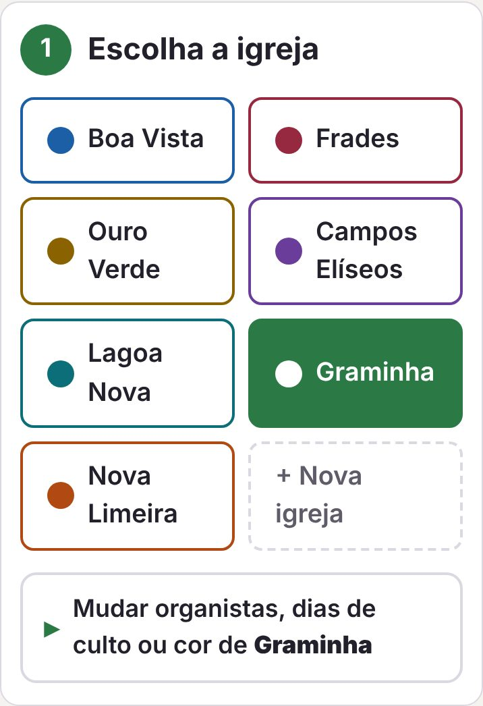
Escolha o mês
Use as setas ◀ e ▶ até aparecer o mês que você quer.
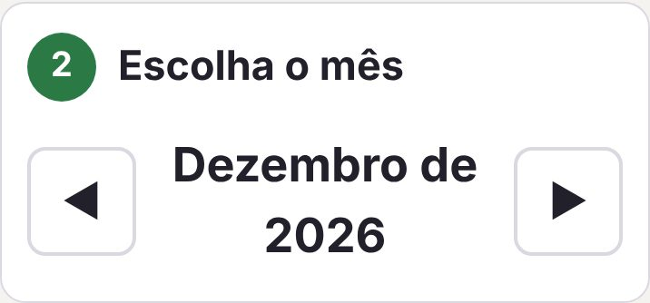
Monte o rodízio
O app já escolhe quem começa, continuando de onde o mês anterior parou. É só conferir e tocar no botão grande Montar rodízio.
Confira e troque o que precisar
O rodízio aparece logo abaixo. Para trocar uma organista, toque no nome dela e escolha outra. No desenho, o quadrado em laranja mostra onde tocar.
Se um culto não vai acontecer, toque em Remover ao lado da data.
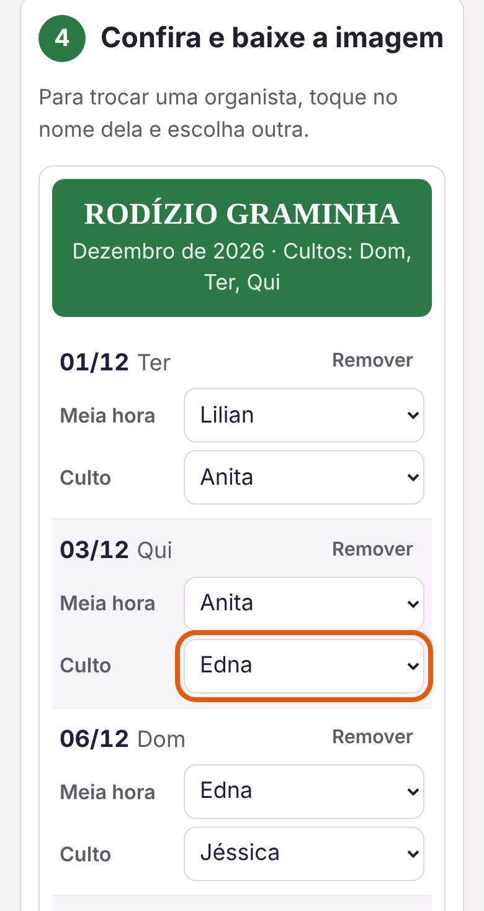
Mais embaixo você pode incluir um culto extra e escrever o Ensaio e a Limpeza/Escala. Eles aparecem na imagem.
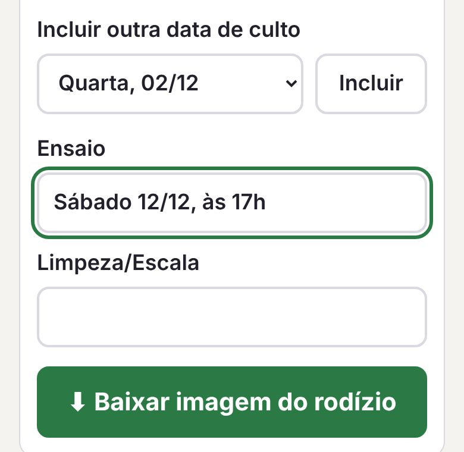
Baixe a imagem
Toque em Baixar imagem do rodízio. Abre uma janela com a imagem pronta. Aí você pode:
- tocar em Salvar imagem;
- tocar em Compartilhar e escolher o WhatsApp (o botão aparece só nos celulares que permitem);
- ou tocar e segurar a imagem e escolher salvar.
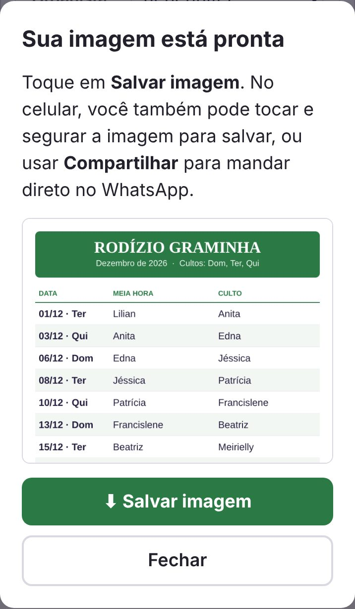
Quando uma organista falta num dia
Toque no nome de quem vai faltar
Abre a lista de nomes. Além das organistas da igreja, aparece:
- o grupo No lugar da …, com a substituta já com a letra certa, por exemplo Andreia (A) no lugar da Alda;
- no fim, ✎ Escrever outro nome…
Exemplo da lista num dia da Alda, em Lagoa Nova. Precisa escrever do seu jeito?
Escolha ✎ Escrever outro nome…, escreva, por exemplo, Elaine (RU), e toque em Usar este nome. O nome aparece assim na imagem.
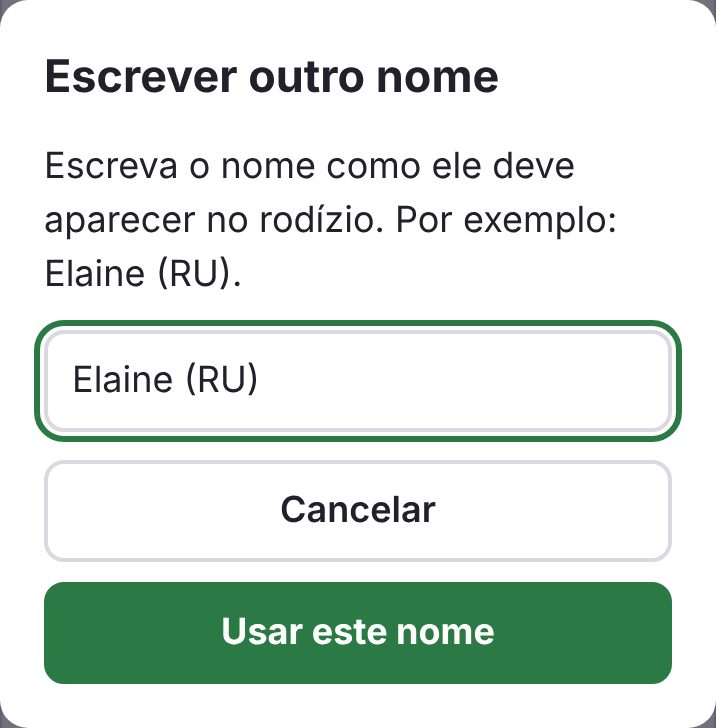
Organista de licença
Para quando alguém fica afastada por um tempo, como a Delma em Lagoa Nova.
Abra as configurações da igreja
No passo 1, toque em Mudar organistas, dias de culto ou cor.
Marque quem está de licença
Em Organistas de licença, toque no nome dela para marcar.
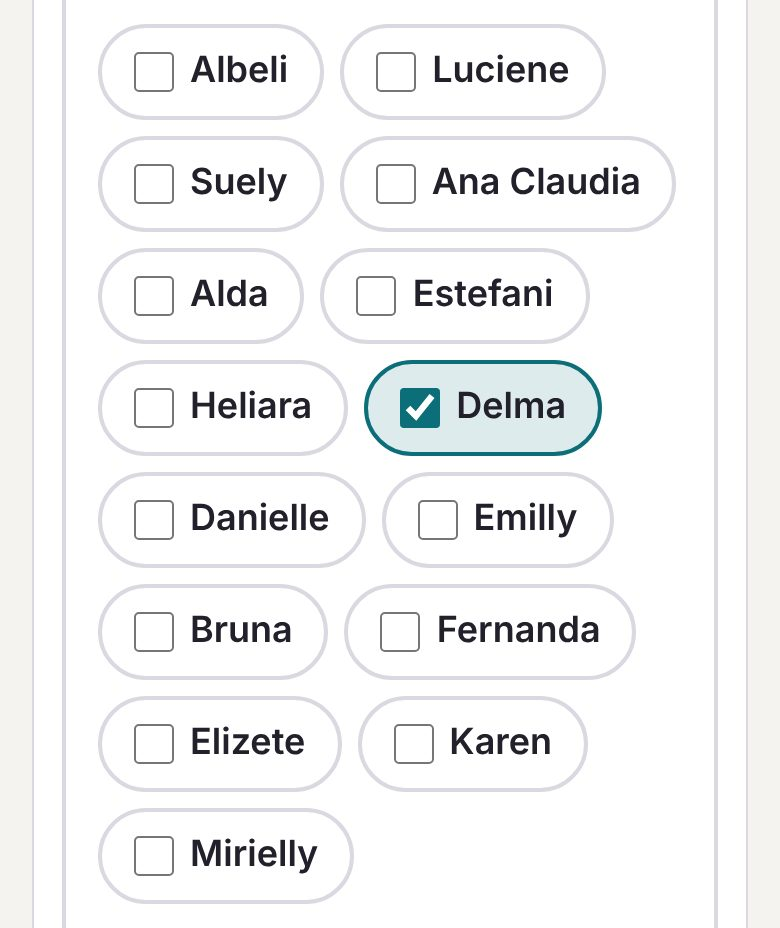
A substituta entra sozinha
Nos dias da Delma, o app coloca a substituta fixa com a letra dela, por exemplo Andreia (D). A substituta fixa fica escrita logo abaixo, no campo Substituta fixa.
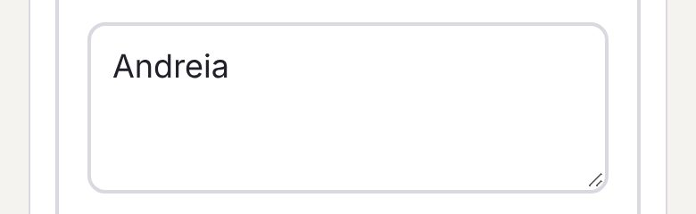
Enquanto houver alguém de licença, o passo 3 mostra um aviso:
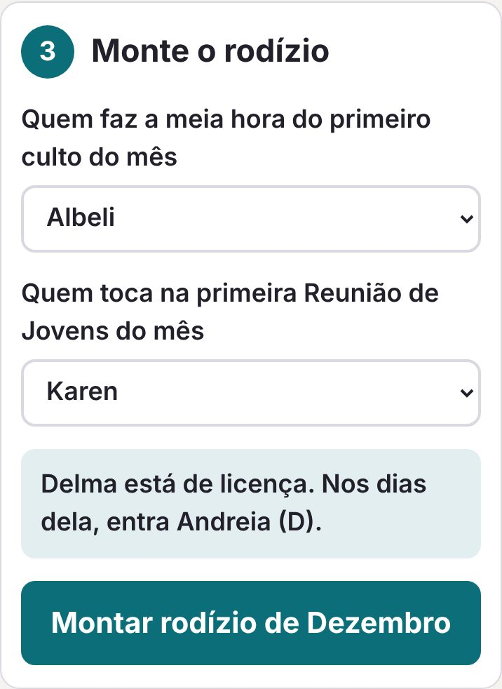
Boa Vista: quem fica de fora no mês
Na Boa Vista, uma organista fica de fora a cada mês, seguindo a ordem da lista. Assim ninguém fica sempre tocando no mesmo dia da semana.
O app já escolhe quem é a vez e mostra quem ficou de fora no mês anterior. Confira e monte normalmente. Para escolher outra pessoa, toque no nome. Se num mês ninguém deve ficar de fora, escolha Ninguém (todas tocam).
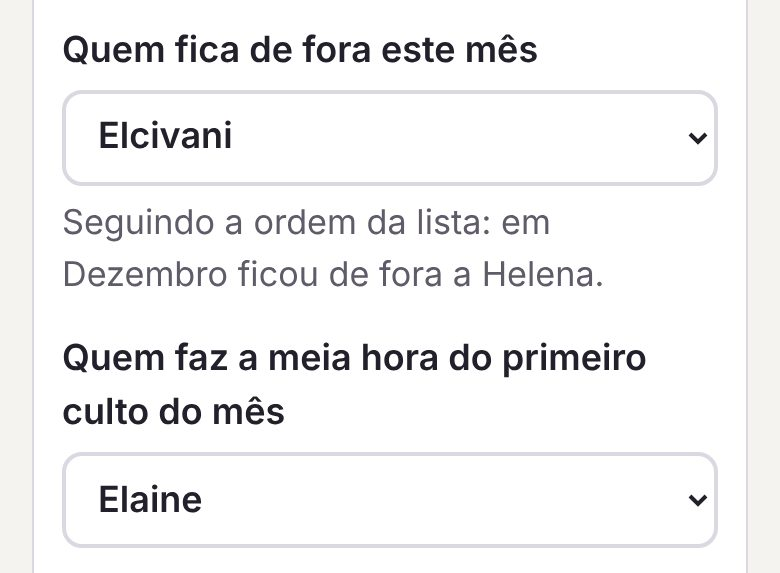
Mudar a lista de organistas ou os dias de culto
Abra as configurações
Escolha a igreja e toque em Mudar organistas, dias de culto ou cor.
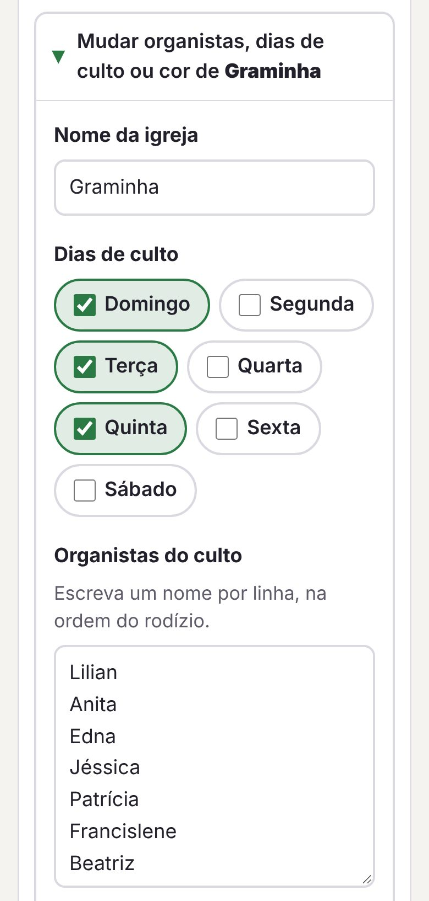
Faça a mudança
- Dias de culto: toque no dia para marcar ou desmarcar.
- Organistas: um nome por linha, na ordem do rodízio. Para tirar alguém, apague a linha dela. Para incluir, escreva o nome numa linha nova.
- Cor: toque na bolinha da cor que quiser.
Toque em Pronto
Pronto. Tudo já ficou salvo. A mudança vale para os próximos meses que você montar.
Dúvidas comuns
Abri o app e sumiu tudo o que eu tinha feito.
O app guarda tudo só no celular e no navegador onde você usou. Em outro celular, em outro navegador ou numa aba anônima, ele começa do zero. Use sempre o mesmo celular, numa aba normal, e não apague os dados do navegador.
O app está diferente do que aparece aqui.
Pode ser uma versão antiga guardada no celular. Feche a aba e abra o app de novo.
Salvei a imagem e não acho.
Procure na Galeria (ou em Fotos, no iPhone) ou na pasta Downloads do celular. Outra opção é usar o botão Compartilhar e mandar direto no WhatsApp.
Errei um nome no rodízio.
Toque no nome errado e escolha o certo. Não precisa montar de novo.
Uma data saiu errada ou falta um culto.
Use Remover ao lado da data para tirar, ou Incluir outra data de culto, embaixo do rodízio, para pôr. Se os dias de culto da igreja mudaram, mude nas configurações e toque em Montar de novo.